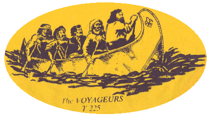

MEETINGS
The troop meets every Tuesday evening from 7:30 - 9:00 PM at St. Bernadette's Dempsey Hall. 2256 Clague Road, Westlake, Ohio 44145.
Scouts should arrive in proper uniform.
UNIFORM
Scout Shirt - with current, up-to-date patches sewn on.
BSA Patch Placement GuideScout pants, scout socks & scout belt - shorts in the summer.
Troop 225 Summer T-shirt (purchased from the troop for $5.00). Worn as directed by the Scoutmaster.
Neckerchief (Troop 225 has its own design- each scout will be provided one - additional Neckerchiefs can be purchased for $5.00). Worn on special occasions as directed.

OUR MISSION
Troop 225 builds leaders by instilling in young men the ideals of the Scout Oath and Scout Law.
Troop 225 is part of the Western Trails District of the Greater Cleveland Council of the Boy Scouts of America.